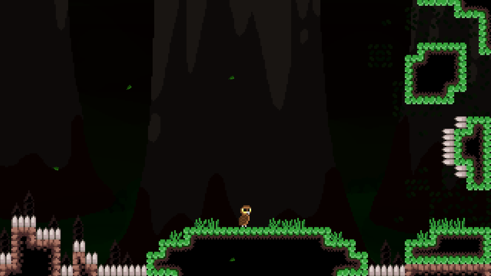
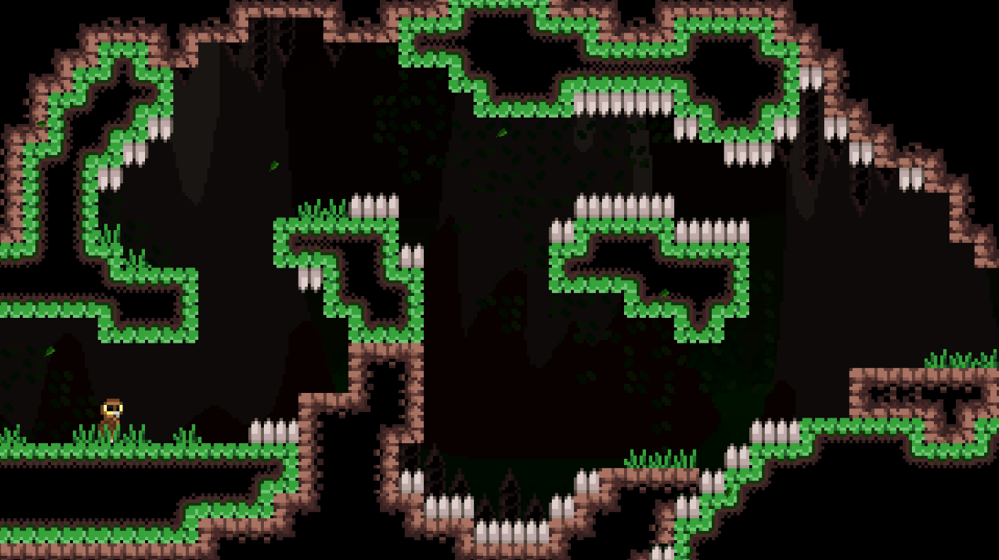

Daniel Sarin
Koodari, suunnittelija, muuta

Kuva pelin ensimmäisestä levelistä.
KUVA2Toteutettu peli on 2D tasohyppelypeli, joka on tehty Unity pelimoottorilla. Pelin tavoitteena on suorittaa tasot ja kerätä keräilyesineitä, joita löytyy pelimaailmasta. Peli on jaettu huoneisiin, joissa pelaajan pitää hyppiä, kiivetä ja liitää päästäkseen esteiden ohi ja edistyä pelissä eteenpäin.
class Player : MonoBehaviour
{
// Simple container for all player states.
public PlayerStateMachine States;
// Data that is passed to the state.
private PlayerStateData state;
private void FixedUpdate()
{
state.frame = input.RequestNextFrame();
state.collision = GetCollisionData();
state.currentState.OnFrameTick(state);
}
...
}
// This is defined in a different file
// but is shown here for readability.
public struct PlayerStateData
{
public Frame frame;
public CollisionData collision;
public PlayerState currentState;
}
public class PlayerState : MonoBehaviour
{
private Player player;
private Rigidbody2D rb;
private Animator animator;
private new BoxCollider2D collider;
public Player Player { get => player; }
public Rigidbody2D Rb { get => rb; }
public Animator Animator { get => animator; }
public BoxCollider2D Collider { get => collider; }
public PlayerStateMachine States { get => player.States; }
private void Awake() { ... }
// Return whether this state can be entered.
public virtual bool CanEnter(PlayerStateData data) => true;
// Called when the player enters this state.
public virtual void Enter(PlayerStateData data) { }
// Called when the player exits this state.
public virtual void Exit(PlayerStateData data) { }
// Special function that can be called to reset the state.
public virtual void Reset() { }
// Called on every frame and runs the state logic.
public virtual void OnFrameTick(PlayerStateData data) { }
}
Player
on pelaajan pääscripti ja hallinnoi pelaajan toimintoja. Pääscripti muun muassa lukee framen aikana
saadut syötteet pelaajalta ja hakee pelaajan kollisiot ja antaa ne pelaajan tilalle, joka hoitaa
tarvittavat toiminnot. Pelaajascripti sisältää myös yleisiä funktioita, jotka eivät ole
tilakohtaisia, kuten
Move
ja
Jump
, joita kutsutaan useammasta eri tilasta.
PlayerState
on kantaluokka, josta muut pelaajatilat periytyvät. Kantaluokka sisältää pelaajan komponentteja sekä
virtuaalifunktioita, joita tilat voivat implementoida. Tilassa on
Enter
ja
Exit
funktiot, joissa voidaan käynnistää animaatioita tai tehdä muita muutoksia,
kun pelaaja siirtyy tilaan tai tilasta pois.
Lisäksi tilassa on
OnFrameTick
funktio, joka kutsutaan joka frame pelaajan antamilla syötteillä ja sisältää tilan loogikan.
Pelaajalla on kuusi mahdollista tilaa, jossa se voi olla:
Tila kun pelaaja on paikoillaan ja maassa.
Tila kun pelaaja liikkuu ja on maassa.
Tila kun pelaaja liitää.
Tila kun pelaaja on ilmassa.
Tila kun pelaaja osuu seinään eikä ole maassa.
Tila, johon pelaaja siirtyy kuollessaan.
// GameManager is a persistent singleton object.
public class GameManager : MonoSingleton<GameManager>
{
[SerializeField] private int checkpointId = 0;
[SerializeField] private int roomId = 0;
[SerializeField] ScrollCamera scrollCamera;
private RoomManager roomManager;
private Player player;
private int checkpointRoomId;
public int CheckpointId { get => checkpointId; }
public int RoomId { get => roomId; }
public Room CurrentRoom { get => roomManager.CurrentRoom; }
private void Start() { ... }
private new void Awake()
{
// Time scale is set to zero to avoid player
// falling through the world before level is loaded.
Time.timeScale = 0.0f;
base.Awake();
}
// Called at the start of the game and loads the first room.
public void StartGame()
{
LoadRoom(roomId);
Time.timeScale = 1.0f;
}
public void LoadRoom(int roomId)
{
this.roomId = roomId;
roomManager.LoadRoom(roomId);
scrollCamera.UpdateRoomBounds(CurrentRoom);
}
public void Respawn()
{
if (roomId != checkpointRoomId)
{
LoadRoom(checkpointRoomId);
}
CurrentRoom.Reset();
CurrentRoom.Respawn(checkpointId);
}
...
}
// Directive that is used to switch between modes.
#define KEEP_ROOMS
public class RoomManager : MonoBehaviour
{
[SerializeField] private Room[] roomPrefabs;
private Room currentRoom;
public Room CurrentRoom { get => currentRoom; }
#if KEEP_ROOMS
private Room[] rooms;
private void Start()
{
rooms = new Room[roomPrefabs.Length];
}
#endif
public void LoadRoom(int roomId)
{
// Set room inactive or destroy it.
if (currentRoom != null)
{
#if KEEP_ROOMS
currentRoom.gameObject.SetActive(false);
#else
Destroy(currentRoom.gameObject);
#endif
}
#if KEEP_ROOMS
// Get room if it exists or instantiate it.
currentRoom = rooms[roomId];
if (currentRoom == null)
{
currentRoom = InstantiateRoom(roomId);
rooms[roomId] = currentRoom;
}
currentRoom.gameObject.SetActive(true);
#else
currentRoom = InstantiateRoom(roomId);
#endif
}
// Helper function with bounds check.
private Room InstantiateRoom(int roomId)
{
if (roomPrefabs.Length > roomId)
return Instantiate(roomPrefabs[roomId], transform);
else
throw new System.Exception($"invalid room id ${roomId}");
}
}
GameManager
on pysyvä objekti, joka hoitaa pelin scene-vaihtumat ja muut tallennettavat tiedot, kuten
pelaajan checkpointin ja huoneen tunnisteet. Scripti sisältää funktioita uuteen huoneeseen
siirtymiseen ja pelaajan respawnaamiseen.
Tällä hetkellä projektissa ei ole scene-vaihtumia, koska ne refaktoroitiin pois, mutta pelissä tulee
olemaan tulevaisuudessa useampia scenejä, joita pelimanageri tulee hallitsemaan. Pelin tallennus ja
lataus tulevat tapahtumaan scriptin kautta kun ne implementoidaan.
RoomManager hallinnoi pelin huoneita,
eli instantioi uusia huoneita, kun niitä pyydetään, ja tuhoaa huoneita, joita ei enää tarvita. Minä kokeilin
eri implementaatioita huonemanagerille ja sitä pystyy vaihtamaan käyttämällä
KEEP_ROOMS
directiiviä.
Ensimmäinen implementaatio instantioi huoneen kun pelaaja siirtyy siihen ja tuhoaa edellisen huoneen.
Toinen implementaatio ei tuhoa edellisiä huoneita vaan pitää ne muistissa siltä varalta, että pelaaja
menee takaisin edellisiin huoneisiin.
This is test text.
Yksi suurimmista ongelmista, johon törmäsin pelin aikana, oli pelaajan kollisio ja sitä
käyttävät toiminnot, kuten seinähyppääminen.
Projektin alussa aloitin käyttämällä Tilemap-komponenttia, jolla pystyin luoda pelin tasoja. Ensimmäinen
ideani oli käyttää prefab-objekteja, joissa oli scripti, joka havaitsi, kun pelaaja osui siihen.
Löysin, että tämä lähestymistapa aiheutti ongelmia, koska pelin maaperä on tehty useammasta objektista,
joka seurasi siihen, että funktiota kutsuttiin monta kertaa vaikka pelaaja oli maassa.
Käytin scriptiä myös selvittääkseni pystyykö pelaaja käyttämään joitain kykyjään, kuten hypätä tai liitää.
Koska maaperä oli tehty useammassa prefab-objektista, joilla oli oma kollideri, niiden välillä liikkuminen aiheutti
pienen aikavälin, jonka aikana pelaajaa ei rekisteröity olevan kummankaan objektin päällä, eikä pelaaja pystynyt
silloin hyppäämään. Ongelma aiheutti myös sen, että pelaaja jäi usein jumiin seiniin.
Kollisioiden kanssa tappelun jälkeen löysin, että Tilemap-komponentissa voi käyttää Tilemap Collider ja Composite Collider
yhdistelmää luodakseen yhtenäiset kolliderit pelin maalle ja seinille. Tämä tuotti kuitenkin omia reunatapauksiaan, kuten
ongelman, jossa pelaaja ei pystynyt hyppäämään vaikka olisi maassa, jos hän hyppäsi maan reunan ohi oikealla tavalla.
Lopuksi päädyin käyttämään Tilemap Collider ja Composite Collider yhdistelmää perusliikkumiseen, mutta
raycastia nähdäkseen missä suunnassa pelaajalla on kollisioita. Suurin osa liikkumiseen liittyvistä
ongelmista ratkaistiin tällä ja pystyin myös lisäämään raycastien etäisyyttä, jotta pelaaja pystyy
hyppäämään vaikka olisikin juuri astunut reunan ohi, joka teki pelistä enemmän anteeksiantavan.
Tämä peli ottaa inspiraatiota Celeste tasohyppely- ja seikkailupelistä, jonka resoluutio on 320x180.
Pelini käyttää 8x8 pikseligrafiikkaa, joka tekisi näytöstä 40x22.5 laattaa, joka teki pelistä oudon
näköisen, koska se ei pystysuorasti mennyt tasan ja yhdestä laatasta jäi näkyviin vain puolet.
Lopuksi päädyin muuttamaan pelin resoluution 640x360 eli 80x45 laattaa, joka teki pelin tasoista
paljon isompia.